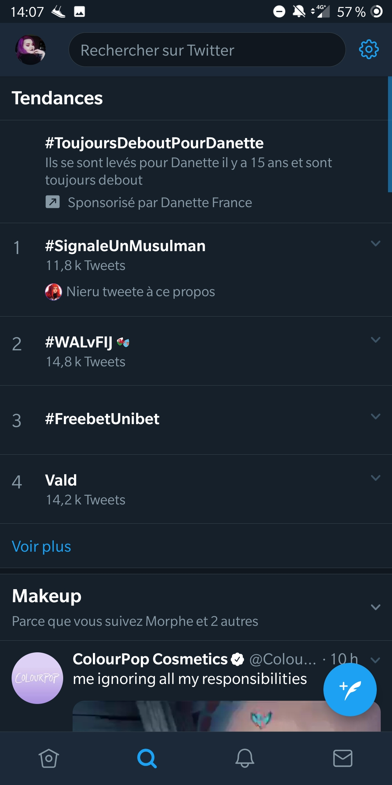
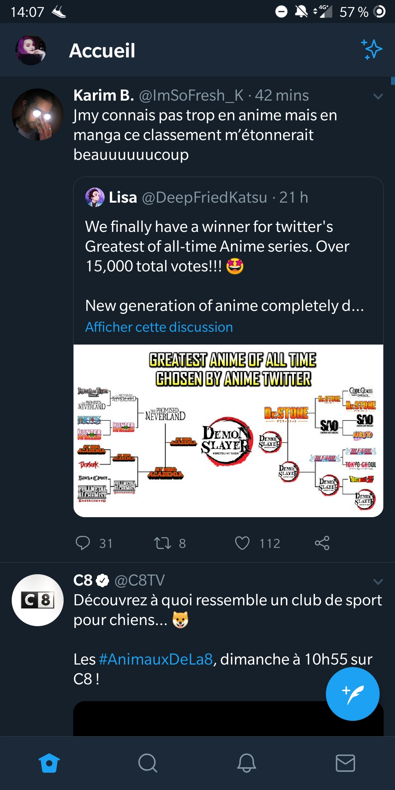
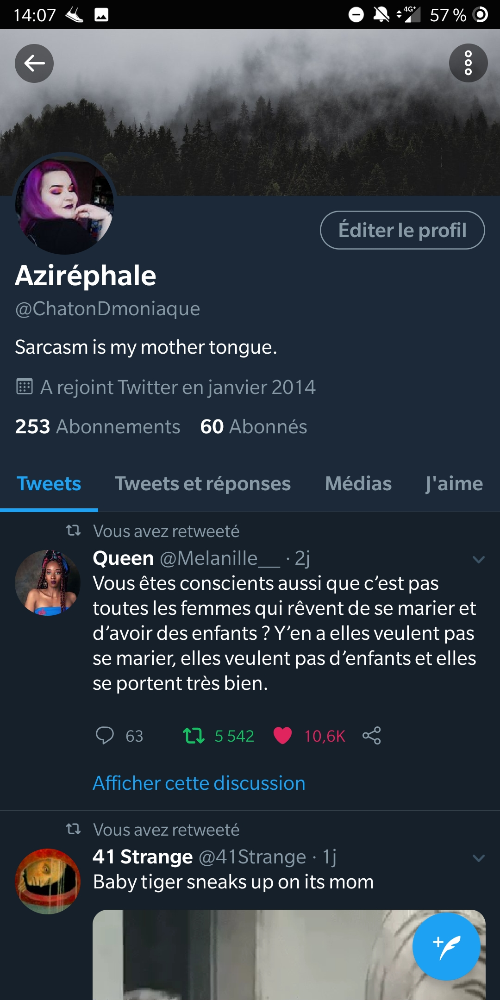

L'onglet tendance, une manière de voir les sujets populaire du moment

L'onglet accueil, où s'affichent tous les tweets des utilisateurs que vous suivez

Une page d'un utilisateur, où s'affiche les tweets qu'il a aimé, retweeter, sa bannière et sa photo de profil et sa bio